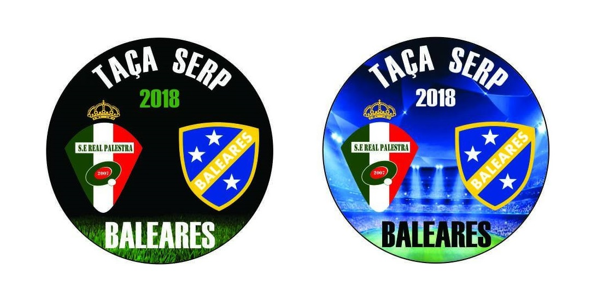
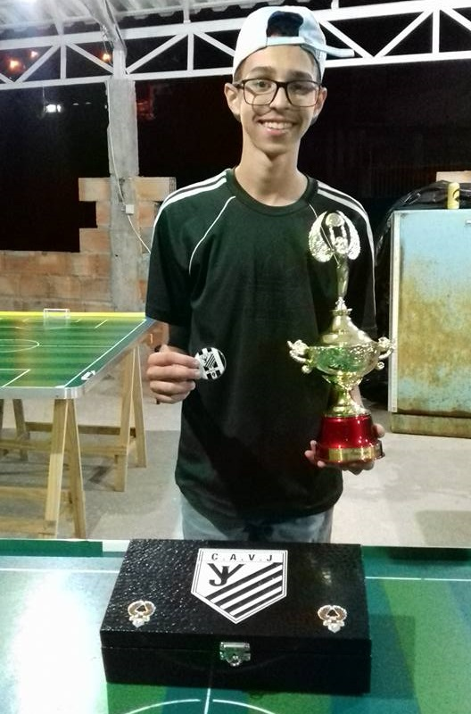
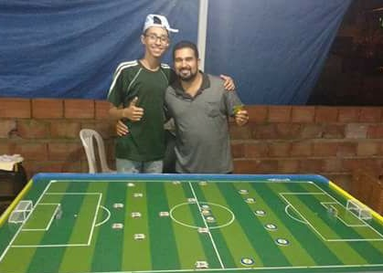
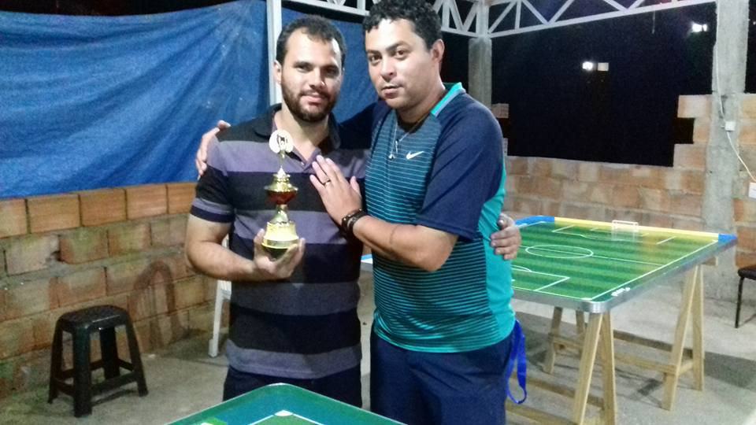
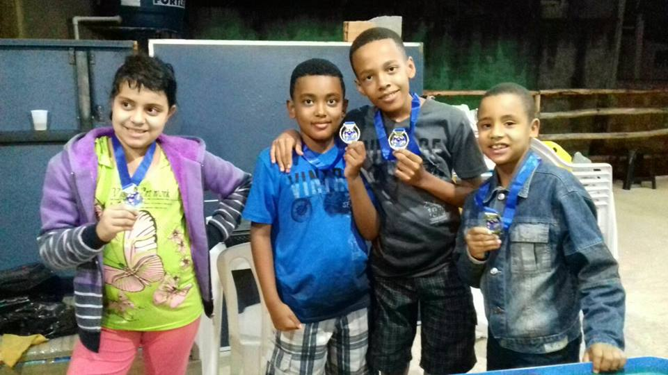

Três anos de sucesso
O que começou como um sonho de montar uma turma para resgatar a prática do futebol de mesa, agora já é uma realidade concreta.E dentro dessa realidade está a Taça Serp abrindo pelo terceiro ano ininterrupto o calendário de competições do GRFMVN, e dessa vez rebatizada como Taça Serp Baleares, uma parceria entre dois dos co-fundadores do Vetor Norte Real Palestra (Fábio) e Baleares (Rodrigo).
Para ser possível esse sucesso, a competição sempre conta a participação, dedicação e empenho dos clubes filiados ao Vetor Norte e seus respectivos técnicos.
Esse ano a Taça Serp Baleares contou com a presença de 11 equipes das 15 afiliadas.As equipes foram divididas em dois grupos superequilibrados.
Foram eles:
| Equipe | Técnico |
| Real Palestra | Fábio |
| Soc. Ventura | Gleison |
| Ventura Jr | Raul |
| Vasco da Gama | João Silvério |
| Cruz Azul | Luciano |
| FG Usinagem | Fagner |
| Equipe | Técnico |
| Baleares | Rodrigo |
| Gálatas | Leandro |
| Sele-Galo | João Paulo |
| Chapecoense | Rubens |
| Villa | Edézio |
O sucesso da Taça Serp Baleares também se traduz em seus três diferentes campeões, três técnicos com maneiras distintas de conduzir seus clubes às vitórias, mostrando o quanto a forma de disputa da competição é democrática.
Nós os organizadores da Taça Serp Baleares (Fábio e Rodrigo), deixamos o nosso agradecimento a todos e as nossas felicitações aos grandes campeões da competição:
Soc. Ventura - 2016
Gálatas FC - 2017
Ventura Jr - 2018
E que esse sucesso continue em 2019!!!
Texto Fabio Henrique.
A vitória do prodígio
Foi uma grande noite para o C.A Ventura Jr do técnico Raul Louzada. O garoto prodígio do Grêmio Vetor Norte mostrou que cresce cada dia mais como atleta de futebol de mesa, demonstrando competitividade e domínio dos nervos quando necessário.
O Ventura Jr chegou à final da Taça Serp Baleares com uma belíssima campanha, onde obteve na primeira fase um escalte positivo de 3 vitórias, 1 empate e uma derrota, seguindo para as semi-finais onde derrotou de virada o FG Usinagem que o havia vencido na primeira fase.
A final entre Baleares e Ventura Jr foi uma partida bastante equilibrada, os dois técnicos nervosos e um jogo muito embolado no meio de campo. Um jogo com muitos erros de passes e por incrível que pareça ainda assim teve boas finalizações nos poucos passes certos que houveram. O Ventura Jr abril o placar nos meados do primeiro tempo terminando assim a primeira etapa na frente do placar. Segundo tempo começa e logo o Baleares faz seu gol de empate. A partida ia se encaminhando para seu final e o Ventura Jr teve que sair para o jogo tendo várias oportunidades de concluir a gol. No final faltando menos de 1 minuto para o fim do jogo o Ventura Jr foi premiado com o gol que lhe deu o título da Taça Serp Baleares, o primeiro título de expressão do garoto prodígio do Vetor Norte.
Texto: Fábio Henrique e Rodrigo Rubens
Quem sabe numa próxima
Mais uma vez o multi-campeão do Grêmio Vetor Norte Baleares (Rodrigo) chega à final da Taça Serp agora rebatizada como Taça Serp Baleares e como nos anos anteriores não logrou êxito em conquistar esse título, um dos poucos que falta em sua galeria. O BALEARES é a única equipe a chegar em todas as finais das três edições da competição e como nas edições anteriores ficou com o vice-campeonato, dessa vez sofrendo revés para a equipe do Ventura Jr (Raul).
O sonho do título ficou mesmo para 2019.
Texto Fabio Henrique.
Retorno em alto nível
Após alguns meses afastado das mesas e disputas oficiais do GRFMVN, o FG Usinagem (técnico Fagner) voltou com tudo. Considerado um dos azarões do grupo "A" da Taça Serp Baleares que contava com equipes tradicionais e técnicos acostumados a estar sempre brigando na ponta das tabelas das competições que disputam, o FG Usinagem não tomou conhecimento e se classificou de forma invicta em seu grupo para as semi-finais, com uma campanha de 4 vitórias sobre Soc. Ventura (Gleison), Cruz Azul (Luciano), Ventura Jr (Raul) e Real Palestra (Fábio) além de um empate contra o Vasco da Gama (João Silvério) Nas semi-finais contra o Ventura Jr, apesar de sair na frente no placar o FG USINAGEM sofreu seu primeiro e único revés na noite e perdeu a chance de chegar à final da Taça Serp Baleares indo então para a disputa do terceiro lugar contra a equipe do Gálatas FC (Leandro).
Inicialmente o FG Usinagem cadenciou o jogo observando e utilizando sua vantagem de jogar pelo empate, enquanto o Gálatas FC tentava jogadas de ataque mas tecnicamente não conseguia desenvolve-las, o FG Usinagem aproveitando do momento criou várias chances até que no segundo tempo abriu o placar e em um lance isolado o Gálatas FC empatou, mas foi o único lance de perigo na partida para a equipe laranja.
Ao final o placar de 1x1 ficou barato para o Gálatas FC e merecidamente o FG Usinagem levou o troféu de terceiro lugar da Taça Serp Baleares 2018 e também ficou com a melhor defesa da primeira fase da competição.
Texto: Fábio Henrique e Leandro Miranda
Preparando o amanhã
A novidade na organização da Taça Serp Baleares 2018, foi a criação da Tacinha, onde as crianças Vetorianos demonstrar suas habilidades com a paleta nas mãos. A "competição" foi mais uma brincadeira, uma maneira de incentivar e preparar uma nova e futura geração de botonistas do Grêmio Vetor Norte e dentro desse pensamento, o que menos importava era o resultado, então todos os atletas do amanhã receberam medalhas pela participação na Tacinha ao final.
Os participantes da esquerda para a direita foram:
Paloma - Cruzinha (única e primeira representante feminina do GRFMVN)
Pedro Henrique - Palestrinha
Víctor Hugo - Cruzeirinho
Víctor Gabriel - Venturinha
Texto: Fábio Henrique
